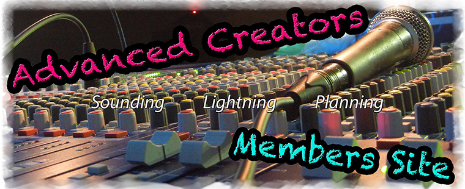

トップページ
アドバン部員専用サイトです。下記メニューからどうぞ。
[NEW]
新TOPページ試験運用なう。TOPページ以外は（気力があれば）しますが、このままでいこうかな、と…
機材管理サイトで、今のあどばんの機材状況をがっつり訂正しました。個数なども直してあります。
まっちゃんが作ってくれた機材リストをUPしました。写真付きで見やすいよ
講習資料、イベント関連資料をがっつりUPしました。
今後MTGログやらなんやら残していく予定ですが、Web担の気合で変わります。
[Web担から一言]
春休みふっふー＼(^o^)／ふるえーるふっふー＼(^o^)／
Last Update: 2013/01/31(Thu)
掲示板
予定表
- 部員用カレンダー
部員用予定カレンダー。メーリスサービスfreemlのです。スマホからも投稿可能
→→とりあえず試験運用。いいの思いついたら変えます。
ログ
- ミーティングログ
議長せっきーがまとめたログと、毎週のMTGをメモ程度に。
☆2013年1月分MTGログ更新済
イベント関連
- 過去の各種資料
学生天国、立川いったい祭、サマブリ、その他諸々のイベント資料があります
機材リスト
ダウンロード
その他コンテンツ